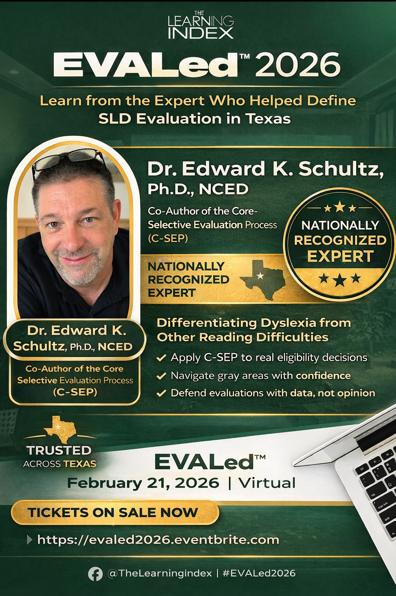
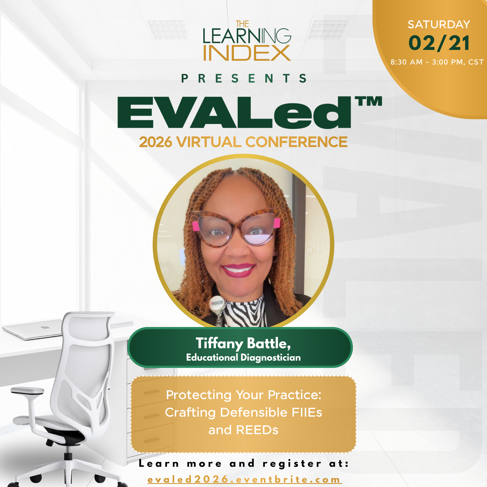
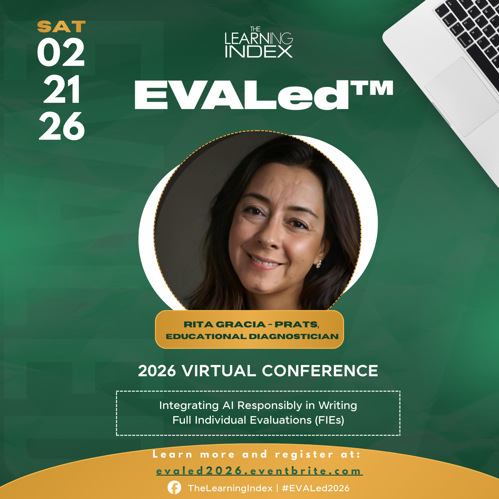

Clarity, Confidence, and a Smarter Way to Evaluate
EVALed™ 2026 was a virtual conference created for educational diagnosticians, school psychologists, and special education evaluation professionals seeking practical strategies, stronger systems, and greater confidence in their work.

Designed with the realities of school-based assessment in mind, EVALed™ brought together professionals and presenters with real-world experience in psychoeducational evaluation, eligibility decision-making, dyslexia, compliance, assessment interpretation, and workflow efficiency.
The conference focused on providing relevant, practical learning experiences that attendees could immediately apply within their districts, campuses, and evaluation practices.
Conference Highlights
Attendees participated in sessions focused on:
- Psychoeducational evaluation best practices
- Dyslexia and reading-related disabilities
- SLD identification and complex eligibility considerations
- AI and workflow efficiency for evaluation professionals
- Bilingual and culturally responsive assessment practices
- Ethical decision-making and compliance considerations
- Strengthening confidence in evaluation interpretation and reporting


Who Attended
EVALed™ welcomed:
- Educational Diagnosticians
- School Psychologists
- Special Education Assessment Staff
- District Evaluation Teams
- Related Service Providers
- Professionals involved in special education assessment and eligibility processes
The Vision Behind EVALed™
EVALed™ was created to provide a professional learning experience that felt practical, supportive, and directly connected to the day-to-day realities of evaluation work in schools.
The conference emphasized:
- Real-world application
- Professional growth
- Collaboration among evaluation professionals
- Smarter systems and more efficient workflows
- Confidence in educational decision-making
Stay Connected
Future professional development opportunities, workshops, and conference updates through The Learning Index will continue to support evaluation professionals committed to improving systems, strengthening teams, and serving students well.
Join the List